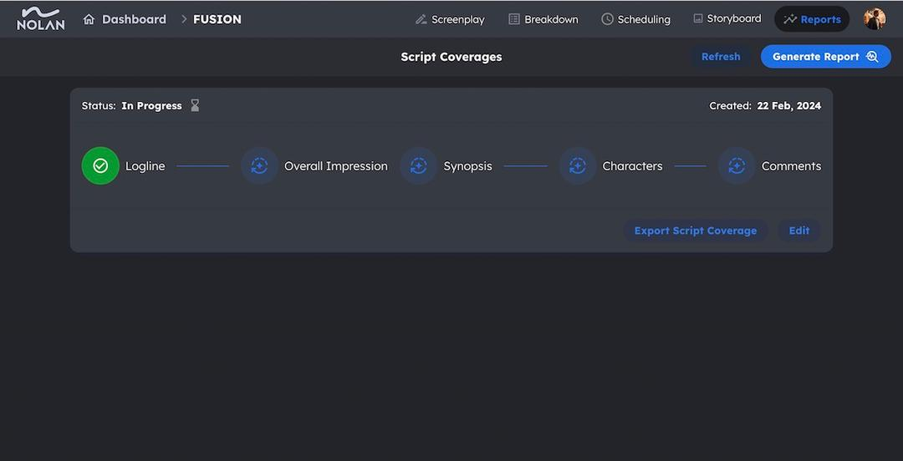
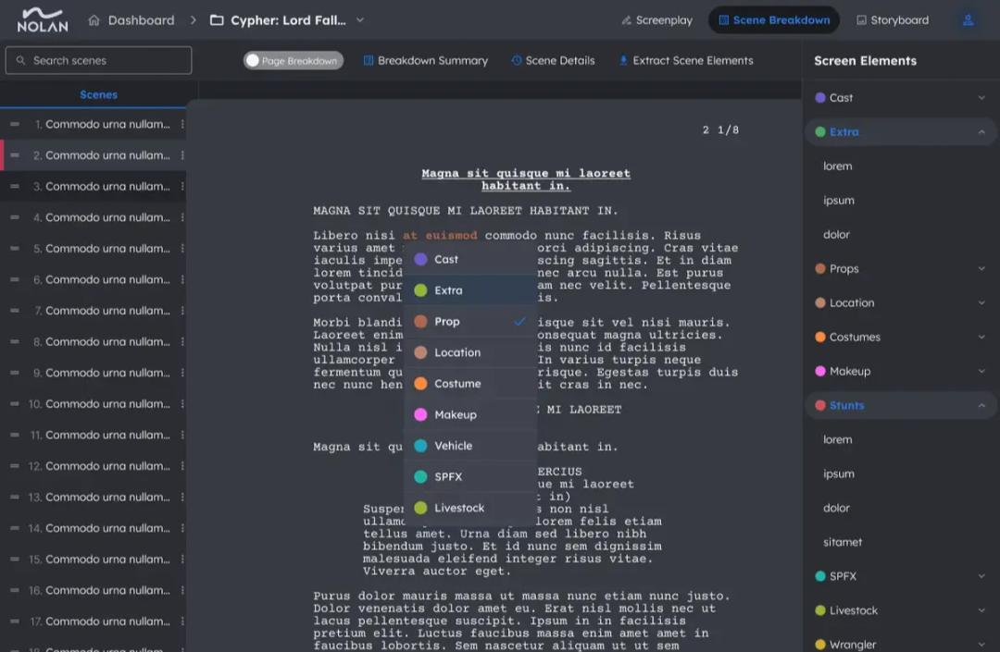
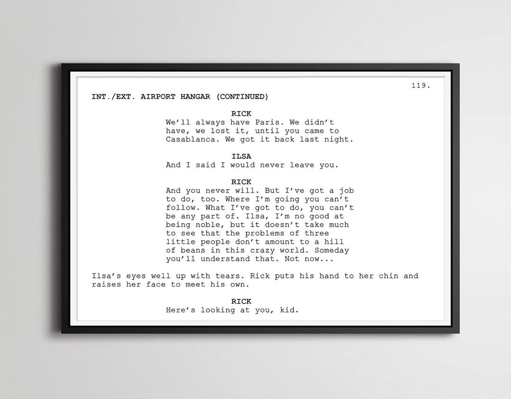
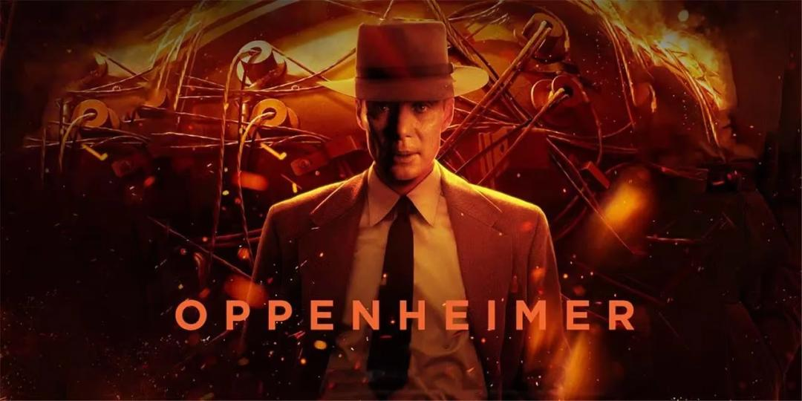
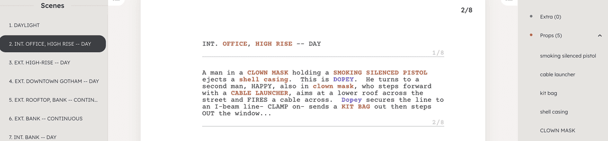
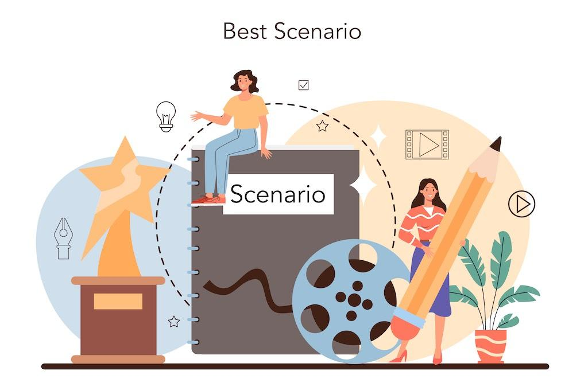

February 29 2024, 02:55
How Producers Harness NolanAI Script Coverage for Success
In the dynamic world of film production, producers play a pivotal role in
shaping
the success of a project.
NolanAI's Automatic Script Coverage emerges as a powerhouse tool specifically tailored to meet the needs of
producers at crucial stages of filmmaking. Let's explore three smart ways producers can leverage NolanAI
Read Article
February 20 2024, 04:15
Script Coverage: Best Practices for the Big Screen
In the dynamic world of the film industry, where captivating stories come to
life on the big screen, script coverage plays a pivotal role in shaping the narratives that captivate audiences.
As a seasoned script analyst immersed in the realm of blockbuster hits, I'm thrilled to share insights into the
best practices for crafting comprehensive and insightful
Read Article
February 13 2024, 02:09
Untamed Stories: Indie Filmmaking Unveiled
Independent films, commonly known as indie films, represent a unique space
within the cinematic landscape, where unparalleled creativity and passion converge to craft narratives that
transcend the boundaries of mainstream storytelling. In contrast to the glitz and glamour of Hollywood's major
productions, indie filmmaking stands as a testament to the exploration of uncharted territories with a
commitment to authenticity and innovation.
Read Article
January 30 2024, 04:37
How to Make A Scene Shorter?!
Making scenes shorter is crucial for maintaining audience engagement. Here are
some tips, including a special feature from NolanAI:
Read Article
January 21 2024, 10:01
Free Scripting Power: Celtx, WriterDuet, NolanAI Unleashed
Embarking on the exciting journey of
Read Article
January 19 2024, 07:19
2024 Sundance: A Cinematic Odyssey
The reels have unspooled, and the curtains have risen, marking the grand
commencement of the 2024 Sundance Film Festival! With January 18th fading into the rearview, let's dive into the
highlights of this extraordinary celebration of independent storytelling.
Read Article
January 10 2024, 04:30
Crafting Compelling Conversations: The Art of Movie Dialogues
Engaging dialogue is the heartbeat of a memorable film, transcending the screen
to captivate audiences and etch characters into our collective memory. In this blog post, we delve into the
intricacies of crafting impactful dialogues, exploring the techniques that make them resonate and highlighting a
few iconic examples from epic movies.
Read Article
January 02 2024, 04:49
Unveiling the Most Wanted Movies of 2024!
Despite the numerous challenges Hollywood faced in 2023, it appears that the
industry has successfully overcome those obstacles. As we enter 2024, the difficulties of the past year are now
in the rearview mirror, paving the way for a renewed sense of excitement. Anticipation is mounting for the
upcoming release of exhilarating superhero films, a long-awaited musical adaptation, the return of George Miller
to the Mad Max series, the third installment of Avatar, and a plethora of other captivating projects. !
Read Article

December 28 2023, 02:19
Leveraging Script Breakdown for Effective Film Scheduling
Film
Read Article
December 22 2023, 12:06
How Movie Trailers are Made: A Behind-the-Scenes Look
Imagine entering a dimly lit cinema, anticipation crackling in the air. The
screen flickers to life, not with the film you came to see, but with a mini-masterpiece in its own right: the
movie trailer. These two to three minutes of carefully curated scenes, electrifying music, and cryptic whispers
hold the power to ignite your curiosity and send you sprinting to the box office.
Read Article
December 20 2023, 01:35
Understanding the Complexity of Film Scheduling
Lights. Camera. Action... Budget overrun! In the world of cinema, few things
are as crucial, yet as complex, as film scheduling. It's a meticulous dance between creative vision, logistical
constraints, and a bottomless pit of potential expenses. Understanding why
Read Article
December 15 2023, 03:25
The Friends in Leave the World Behind
So, in the Netflix movie "Leave the World Behind" with Julia Roberts, there's
this cool subplot about Friends. Picture this: Rose is binge-watching Friends when all of a sudden, the internet
goes bonkers with an apocalyptic vibe. Crazy, right? Well, she ends up seeking refuge in her neighbor's doomsday
bunker. Meanwhile, bombs are raining down on Manhattan, and an emergency alert spills the beans about rogue
armed forces going wild on the White House and big cities.
Read Article
December 15 2023, 02:52
Novel to Screenplay: The Secrets of Storytelling Success
Converting a beloved novel into a captivating screenplay is a thrilling yet
daunting task. It's like breathing life into your characters and story in a whole new way, but the transition
from prose to visuals demands a unique approach. Fear not, fellow writer, for with the right guidance, you can
navigate this exciting journey and bring your literary masterpiece to the silver screen.
Read Article
December 12 2023, 12:46
How Not to Write a Screenplay
Even the best writers stumble. Take Akiva Goldsman, a Hollywood heavyweight
with an Oscar for Best Adapted Screenplay under his belt. Yet, his career also includes the infamous ".he
holidays bring joy, family, and… explosions? It's true, Christmas has become a surprising haven for action
movies, offering thrilling narratives amidst the snow and festivities..Let's dive into five iconic action films
that take place around Christmas, along with their scripts, to explore how they elevate the genre and spark your
own creative fire
Read Article
December 15 2023, 03:25
The Friends in Leave the World Behind
So, in the Netflix movie "Leave the World Behind" with Julia Roberts, there's
this cool subplot about Friends. Picture this: Rose is binge-watching Friends when all of a sudden, the internet
goes bonkers with an apocalyptic vibe. Crazy, right? Well, she ends up seeking refuge in her neighbor's doomsday
bunker. Meanwhile, bombs are raining down on Manhattan, and an emergency alert spills the beans about rogue
armed forces going wild on the White House and big cities.
Read Article
December 15 2023, 02:52
Novel to Screenplay: The Secrets of Storytelling Success
Converting a beloved novel into a captivating screenplay is a thrilling yet
daunting task. It's like breathing life into your characters and story in a whole new way, but the transition
from prose to visuals demands a unique approach. Fear not, fellow writer, for with the right guidance, you can
navigate this exciting journey and bring your literary masterpiece to the silver screen.
Read Article

December 12 2023, 12:46
How Not to Write a Screenplay
Even the best writers stumble. Take Akiva Goldsman, a Hollywood heavyweight
with an Oscar for Best Adapted Screenplay under his belt. Yet, his career also includes the infamous ".he
holidays bring joy, family, and… explosions? It's true, Christmas has become a surprising haven for action
movies, offering thrilling narratives amidst the snow and festivities..Let's dive into five iconic action films
that take place around Christmas, along with their scripts, to explore how they elevate the genre and spark your
own creative fire
Read Article
December 15 2023, 03:25
The Friends in Leave the World Behind
So, in the Netflix movie "Leave the World Behind" with Julia Roberts, there's
this cool subplot about Friends. Picture this: Rose is binge-watching Friends when all of a sudden, the internet
goes bonkers with an apocalyptic vibe. Crazy, right? Well, she ends up seeking refuge in her neighbor's doomsday
bunker. Meanwhile, bombs are raining down on Manhattan, and an emergency alert spills the beans about rogue
armed forces going wild on the White House and big cities.
Read Article

December 15 2023, 02:52
Oppenheimer script
For fans of the legendary filmmaker Christopher Nolan, the anticipation for his
latest cinematic masterpiece, 'Oppenheimer,' has been nothing short of thrilling. And for those still yearning
for a deeper dive into Nolan's creative genius, you're in luck.
Read Article
November 29 2023, 05:20
Decoding Midpoint Magic in Scriptwriting
Today, we embark on a journey through the labyrinth of scriptwriting,
unraveling the enigma that is the Midpoint. Join me as we explore the heart of narrative structure,
understanding why the Midpoint is the linchpin that can elevate your screenplay from good to unforgettable.
Read Article
November 28 2023, 02:21
The Heartbeat of a Strong Opening Scene
Hey there, fellow storytellers and movie lovers! Today, let's chat about
something near and dear to our creative hearts: the enchanting world of opening scenes. Whether you're just
starting your scriptwriting journey or you're a seasoned film enthusiast, there's something magical about the
art of a captivating opening.
Read Article
November 19 2023, 05:27
The Impact of AI on Film Production
In the dynamic landscape of film production, the emergence of artificial
intelligence has piqued interest, with NolanAI standing out as a noteworthy example. Despite being a newcomer in
the industry, NolanAI sheds light on the potential applications of AI, especially in the face of challenges like
recent writers' strikes.
Read Article
November 14 2023, 02:48
The Cinematic Canvas: Importance of Storyboards in Film
Production
In the realm of filmmaking, where every frame is a brushstroke on the canvas of
storytelling, the significance of storyboards cannot be overstated. As a seasoned professional in the film
industry, I've witnessed firsthand the transformative power of storyboards in shaping narratives, streamlining
production, and elevating the overall creative process. In this blog, we embark on a journey into the heart of
visual storytelling, exploring the usage and importance of storyboards in the world of film.
Read Article
November 07 2023, 03:12
Feedback Matters: Enhancing Your Screenwriting Journey
Writing is a deeply personal and often solitary endeavor. When it comes to
screenwriting, this creative process is no exception. Every writer puts their heart and soul into crafting a
story, developing characters, and creating a world that resonates with an audience. However, screenwriting, like
all forms of art, benefits from an external perspective. This is where feedback comes into play. In this blog
post, we'll explore the give and take of receiving screenwriting feedback and how it can elevate your craft with
the help of NolanAI.
Read Article
September 14 2023, 12:28
AI in Film and TV: A Harmonious Partnership with Human
Creativity
In the enchanting world of film and television, a silent revolution is
unfolding—one where the realms of human creativity and cutting-edge AI technologies coexist in perfect harmony.
While the landscape is evolving with AI's growing influence, it's essential to emphasize that AI is not here to
supplant human ingenuity but rather to complement and amplify it.
Read Article
September 05 2023, 02:47
NolanAI: TikTok & Instagram ScriptCrafters
Production
In today's fast-paced world of social media, capturing your audience's
attention within seconds is a formidable challenge. Whether you're an aspiring influencer, a business promoting
products, or simply someone with a story to tell, your script is your secret weapon. Now, imagine having an
AI-powered tool that not only understands the nuances of TikTok and Instagram but also tailors your script to
fit their unique requirements.
Read Article
August 30 2023, 02:30
🎬 Diving into the Barbie Movie: Scriptwriting Enchantment!
🎬
Lights, camera, Barbie!
Read Article
July 01 2023, 02:51
Celebrating the Creative Brilliance: Women Scriptwriters
Shaping the Narrative
In the world of storytelling, women scriptwriters have long been an integral
part of shaping the narrative landscape. Their immense talent, creativity, and unique perspectives have
contributed to some of the most captivating and thought-provoking stories in film, television, and theater.
Today, we celebrate the remarkable achievements of women scriptwriters who have broken barriers, challenged
stereotypes, and enriched our cultural tapestry with their exceptional work.
Read Article
June 22 2023, 04:15
The Scene Beat Sheet: Streamlining Screenplay Writing with
NolanAI
Screenplay writing is a meticulous craft that requires careful planning and
organization to bring stories to life on the silver screen. One essential tool used by screenwriters is the
scene beat sheet. A scene beat sheet is a structured outline that breaks down a screenplay into its individual
beats or moments, providing a clear roadmap for the narrative. With the advent of advanced AI technologies like
NolanAI, the process of creating a scene beat sheet and translating it into an initial draft has become even
more efficient and seamless.
Read Article

June 16 2023, 03:29
Enhancing the Screenwriting Experience: Unveiling Exciting
New Features in NolanAI
Check out our recent updates that have elevated the scriptwriting experience
for you.
Read Article
May 05 2023, 10:39
Mastering Hollywood-style Scriptwriting with Scriptfella
Program
Attention all aspiring screenwriters! Are you ready to take your storytelling
skills to the next level and make your script Hollywood-worthy? Join
Read Article
May 01 2023, 12:56
Boost Your Script Writing Skills with These Top 3 Podcasts
If you're a movie script writer looking for tips and inspiration to improve
your craft, you're in luck! We've compiled a list of the top 3 podcasts that offer expert advice and unique
insights into the screenwriting industry. Read on to learn more and don't forget to subscribe to these valuable
resources!
Read Article
April 23 2023, 09:21
Democratizing Screenwriting
The art of screenwriting has long been considered an elusive and exclusive
craft, reserved for a select few who have mastered the art of storytelling and possess the necessary connections
to break into the film industry. However, with the emergence of new technologies such as artificial
intelligence, the world of screenwriting is about to undergo a massive democratization.
Read Article
March 25 2023, 12:08
AI Copilot for Scriptwriters
Artificial intelligence (AI) has already transformed many industries, and the
entertainment industry is no exception. One area where AI is poised to make a significant impact is in
scriptwriting. With the development of AI-driven copilot software like "Nolan Copilot", scriptwriters can now
take advantage of the many benefits that this technology offers."Nolan Copilot" can be incredibly useful for
scriptwriters in a number of ways.
Read Article
March 24 2023, 02:056
Writing an Unforgettable Action Screenplay: What You Need to
Know
Writing an action screenplay can be a thrilling and exciting experience.
However, it can also be a challenge to create a story that is both visually stunning and emotionally engaging.
Here are some tips to help you get started:
Read Article
March 24 2023, 02:02
Exploring New Worlds: How to Write a Sci-Fi Screenplay
Writing a sci-fi screenplay can be an exciting and challenging experience.
Science fiction allows for endless possibilities and creativity, but it also requires a lot of thought and
planning. Here are some tips to help you get started:
Read Article
March 24 2023, 01:59
Writing for Impact: How to Write a Dramatic Screenplay That
Sticks with Your Audience
Writing a dramatic screenplay can be a daunting task, especially if you're new
to the craft. But fear not! With a little bit of guidance and a lot of hard work, anyone can learn how to write
a great dramatic screenplay.
Read Article

March 24 2023, 01:42
How to Become a Better Screenwriter?
Screenwriting is a craft that requires a combination of innate talent and
learned skills. While some may be born with an intuitive sense for storytelling and dialogue, there are many
techniques and strategies that can be learned to improve one's screenwriting abilities.
Read Article
March 23 2023, 01:36
The Top 10 Mistakes New Screenwriters Make (And How to Avoid
Them)
If you're a new screenwriter, it's important to be aware of the common mistakes
that can hinder your success. By avoiding these pitfalls, you'll be better equipped to create compelling stories
that captivate audiences. Here are the top 10 mistakes new screenwriters make, and how to avoid them.
Read Article


.jpeg)